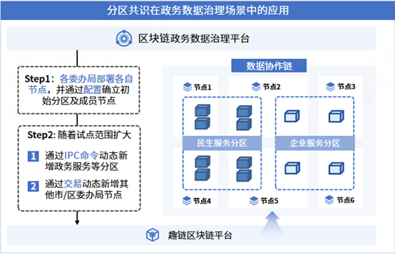

安全隐私¶
区块链公开透明的特性在实际商用场景落地过程中往往限制了业务的扩展，为了应对实际场景中隐私保护的需求，平台提供分区共识以及TEE账本加密两种隐私保护方案。
分区共识¶
区块链冗余存储的特性决定了区块链网络中的每个节点都需要存储一份全量账本数据，而在商业应用中，存在敏感数据只能在有限节点间进行共享，或者不同业务间数据需要相互隔离的需求。
为此，平台设计了分区共识（Namespace）机制，不同分区间的交易共识、执行、存储完全解耦，不仅实现了交易数据对其他分区不可见，同时，由于交易并行执行，分区性能也不会随分区数量增加而显著下降。平台支持分区及分区成员的动态管理，允许用户在不停机的情况下，进行分区以及分区节点的增删，快速适应业务需求变化。
通过分区共识机制，需要进行隔离的数据可以仅在指定分区内进行共享和存储。原本通过建不同的链实现数据隔离的模式，需要在每次建链时重新部署节点，十分繁琐，而现在的分区隔离模式只需单次部署节点，便可按照实际需求选择加入一个或多个分区，在实现数据隔离的同时有效降低了部署及运维复杂度。

图中描述了分区共识在政务数据治理场景中的应用。区块链政务数据治理平台的数据协作链承载了民生服务、企业服务等业务，不同业务数据间存在隔离需求。建链时，各委办局部署各自节点，并通过配置确立初始分区及成员节点。随着试点范围的扩大，牵头部门可在民生服务和企业服务分区的基础上，通过IPC命令动态新增政务服务分区，并通过发送交易动态新增其他市/区委办局节点，逐步完善整个政务数据治理平台的搭建。
TEE账本加密¶
账本加密针对用户的账户信息和业务数据进行按需加密操作，将密钥存储在TEE硬件可信执行环境中，账本数据通过TEE的密钥进行加解密，由于在整个过程中账本加密的密钥都在TEE中而没有向外暴露，所以可以保证账本数据加密的安全性；而且平台会确保硬件执行环境的安全性，这一层面外部用户无需感知；另外如果需要参与方和审计方具有设计查看数据，则可通过赋予其数据访问权限，通过密码学算法如哈希校验等进行对加密信息的有效性和正确性验证。
账本加密可应用于密钥存储和数据加密两种场景。
密钥存储，密钥存储某种程度上可以理解为CPU担任了UKey的功能。他是将关键密钥信息托管到可信计算环境中不再导出以便保护关键密钥。这里能够保存的密钥包括平台ecert、rcert的私钥，特殊用途的密钥等，最终的密钥保存在配置文件指定的加密文件中。密钥存储的子功能主要包括：密钥生成、加密解密、密钥导入、签名。
数据加密，数据加密是利用了密钥存储的加密解密的功能，在此基础上专门提供特定于节点的密钥加密功能。提供公共的一组加密解密接口供对共识数据加密使用。密钥对不同的节点是不同的而且只有一份拷贝，但是考虑到加密的数据在其他节点也能找回，因此不用担心密钥丢失的问题。